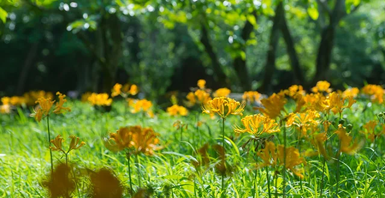
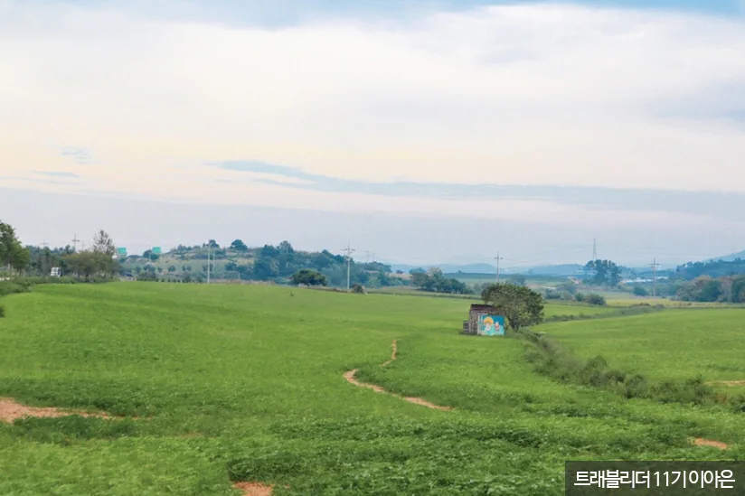
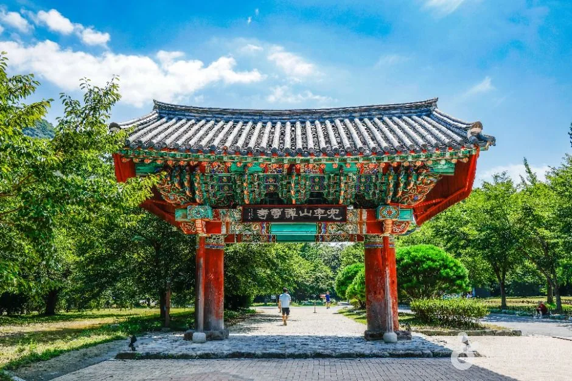
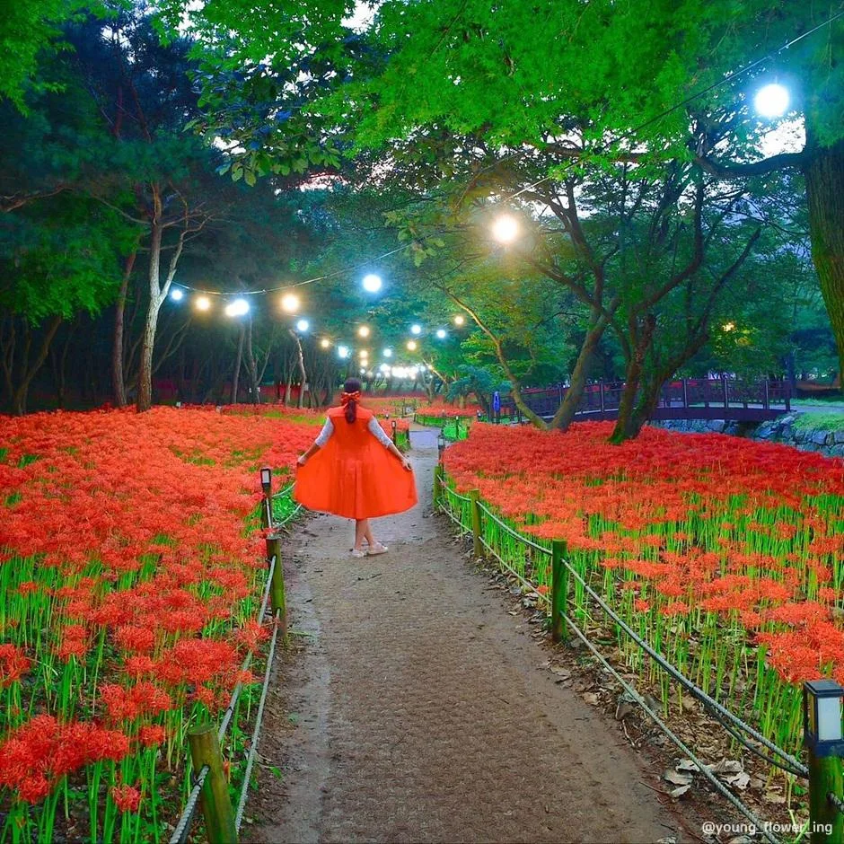
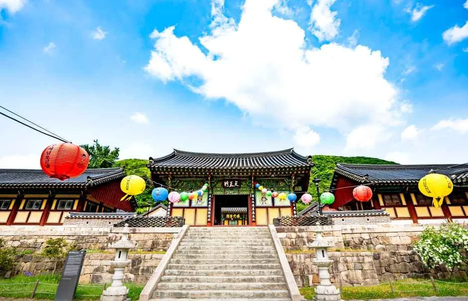

▲ 9월 중순 사찰 주변을 덮는 꽃무릇 군락. 영광·함평·고창이 국내 3대 군락지로 꼽힌다
9월 중순이면 전남과 전북의 몇몇 사찰 주변이 통째로 붉어집니다. 숲 바닥이 붉은 융단처럼 덮이는 그 풍경을 보러 사람들이 몰립니다.
그런데 축제 이름과 실제로 피는 꽃이 다릅니다. 영광에서 열리는 행사의 이름은 상사화 축제인데, 9월에 그곳에서 보는 붉은 꽃은 꽃무릇입니다. 둘은 다른 꽃입니다.
1. 상사화와 꽃무릇은 다른 꽃이다
둘 다 수선화과에 속합니다. 그래서 한 집안이라고는 할 수 있지만, 학명이 다르고 이름도 각자 갖고 있는 별개의 꽃입니다.

▲ 상사화. 8월에 피며 색도 붉지 않다 ⓒ 대한민국 구석구석(한국관광공사)
| 구분 | 상사화 | 꽃무릇(석산) |
|---|---|---|
| 개화 시기 | 8월 | 9~10월 |
| 꽃 색 | 홍자색 · 연분홍 · 노랑 | 붉은색 |
| 9월 축제에서 보는 꽃 | 이미 진 뒤 | 이쪽 |
| 생육 | 여름에 개화 | 가을 개화 후 새싹이 나 겨울을 남 |
꽃무릇의 생육 주기는 특이합니다. 가을에 꽃이 지고 나면 그제야 새싹이 올라와 상록으로 겨울을 나고, 이듬해 초여름에 잎이 삭아 사라집니다. 잎과 꽃이 서로를 보지 못하는 구조입니다.

▲ 군락지 세 곳은 모두 전남·전북의 같은 권역에 있다 ⓒ 대한민국 구석구석(한국관광공사)
그런데도 축제 이름이 상사화인 이유가 있습니다. 영광 불갑사 관광지에서는 8월에 분홍과 황금노랑 상사화가 먼저 피고, 9월에 붉은 꽃무릇이 이어집니다. 두 꽃이 한 장소에서 시차를 두고 피기 때문에 축제 이름이 상사화로 붙었습니다. 다만 9월에 가면 보는 것은 꽃무릇입니다.
2. 왜 하필 절 주변인가
3대 군락지가 모두 사찰입니다. 영광 불갑사, 함평 용천사, 고창 선운사입니다. 우연이 아닙니다.

▲ 군락지는 대부분 사찰 경내와 진입로 주변에 형성돼 있다 ⓒ 대한민국 구석구석(한국관광공사)
꽃무릇 알뿌리에는 독성 성분이 들어 있습니다. 이 성분이 방충과 방부 효과를 낸다고 알려져, 예로부터 사찰에서 탱화와 단청, 경전을 보존하는 데 쓰였다는 이야기가 전합니다. 절 주변에 군락이 형성된 배경으로 흔히 언급되는 설명입니다.

▲ 석등과 전각 사이로 꽃무릇이 피어 사찰 특유의 풍경을 만든다 ⓒ 대한민국 구석구석(한국관광공사)
규모는 용천사가 가장 큽니다. 절로 오르는 숲길 양쪽으로 약 40만 평에 걸쳐 군락이 형성돼 있습니다. 선운사는 도솔천을 따라 이어지는 물가 풍경이 특징이고, 불갑사는 축제와 야간 프로그램이 함께 붙습니다.
3. 세 곳 모두 진입로가 좁다
여기서부터가 차로 가는 사람이 알아야 할 부분입니다. 군락지가 사찰이라는 말은, 진입로가 산길이라는 뜻이기도 합니다.

▲ 군락지 내부는 대부분 걸어서 도는 흙길과 데크다 ⓒ 대한민국 구석구석(한국관광공사)
사찰 진입로는 대개 편도 1~2차로입니다. 평소에는 문제가 없지만 개화기 열흘 동안 수요가 한꺼번에 몰리면 진입 자체가 병목이 됩니다. 주차 면수보다 들어가는 길의 용량이 먼저 한계에 닿습니다.

▲ 사찰 앞 주차 공간은 평시 기준으로 조성돼 있어 축제 기간에는 부족해진다 ⓒ 대한민국 구석구석(한국관광공사)
| 장소 | 특징 | 차량 접근 |
|---|---|---|
| 영광 불갑사 | 축제 개최 · 야간 프로그램 | 축제 기간 임시 주차장·통제 운영 |
| 함평 용천사 | 약 40만 평 · 국내 최대급 군락 | 숲길 진입 — 도보 구간 길다 |
| 고창 선운사 | 도솔천 물가 군락 | 사찰 진입로 편도 협소 |
📍 개화 상황을 미리 확인하는 방법
꽃무릇은 절정 기간이 일주일 안팎으로 짧습니다. 며칠 차이로 헛걸음할 수 있습니다.
영광군은 유튜브 채널과 홈페이지 라이브캠으로 실시간 개화 상황을 공개하고 있습니다. 출발 전날 확인하면 절정 여부를 판단할 수 있습니다.
4. 밤에 가면 다른 코스가 된다
영광 축제에는 야간 프로그램이 함께 붙습니다. 달빛 야행과 미디어 파사드, 조명을 활용한 야간 경관이 운영돼 낮과 다른 풍경이 나옵니다.

▲ 야간 조명이 들어간 꽃무릇 길. 낮과 다른 코스가 된다 ⓒ 대한민국 구석구석(한국관광공사)
차로 갈 때 야간은 두 가지가 달라집니다. 첫째, 출차가 한꺼번에 몰립니다. 프로그램이 끝나는 시각에 모두가 동시에 나갑니다. 둘째, 산길 진입로에는 가로등이 거의 없습니다.

▲ 축제 기간에는 사찰 경내에도 조명과 연등이 걸린다 ⓒ 대한민국 구석구석(한국관광공사)
야간 방문이라면 프로그램 종료 30분 전에 빠져나오는 편이 낫습니다. 정체를 피할 수 있고, 어두운 산길을 앞차 없이 여유 있게 내려올 수 있습니다.
5. 하루 동선 만들기
세 곳은 서로 멀지 않습니다. 영광과 함평은 인접해 있고 고창도 같은 권역입니다. 다만 하루에 셋을 모두 도는 구성은 권하기 어렵습니다. 각각 주차하고 걷는 시간이 붙기 때문입니다.
현실적인 조합은 두 곳입니다. 영광 불갑사에서 축제를 보고 함평 용천사로 넘어가는 구성이 이동 거리 면에서 자연스럽습니다. 고창 선운사는 도솔천 풍경이 성격이 달라 따로 잡는 편이 낫습니다.
| 항목 | 내용 |
|---|---|
| 시기 | 9월 중순~하순 — 절정은 일주일 안팎 |
| 확인 | 출발 전날 라이브캠으로 개화 상황 |
| 주차 | 축제 기간 임시 주차장·셔틀 운영 여부 |
| 도보 | 군락지 내부는 흙길·데크 — 편한 신발 |
| 야간 | 프로그램 종료 30분 전 이탈 권장 |
| 하루 코스 | 두 곳까지 — 세 곳은 무리 |
정리하면 이렇습니다. 9월에 보러 가는 붉은 꽃의 이름은 꽃무릇이고, 축제 이름의 상사화는 8월에 이미 졌습니다. 그리고 세 군락지 모두 산자락 사찰이라, 볼거리보다 들어가는 길을 먼저 계산해야 하는 목적지입니다.